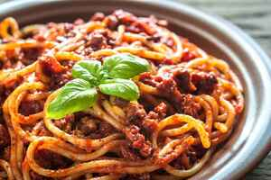
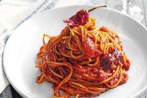

Orecchiette Cime di Rapa
.jpg)
Ingredienti
Procedimento
Per preparare le Orecchiette cime di rapa, dovrete pulire le cime di rapa. Una verdura che produce molto scarto: dovrete eliminare le foglie esterne più grandi e i gambi più coriacei, mentre dovrete tenere i fiori, le foglie più piccole lungo il gambo e le estremità più tenere dei rametti (le cime delle rape). Eliminate anche eventuali foglie ingiallite o rovinate. ecc...
Ragù alla Bolognese
Ingredienti
Procedimento
Per realizzare il ragù alla bolognese come prima cosa preparate il brodo vegetale seguendo la nostra ricetta. Passate alla pancetta: tagliatela prima a fette e poi a striscioline, senza essere troppo precisi. Poi con un coltello o una mezzaluna sminuzzatela per bene. In una casseruola già calda versate un giro d'olio e aggiungete la pancetta di maiale . ecc...
Spaghetti all' Assassina
Ingredienti
Procedimento
Per preparare gli spaghetti all’assassina per prima cosa dovete prendere una pentola con abbondante acqua, nella quale dovete far bollire il concentrato di pomodoro con un pizzico di sale. Nel frattempo prendete una padella, versate abbondante olio extravergine di oliva e fate rosolare i peperoncini piccanti e gli spicchi d’aglio. Trascorsi 2-3 minuti, aggiungete ecc..